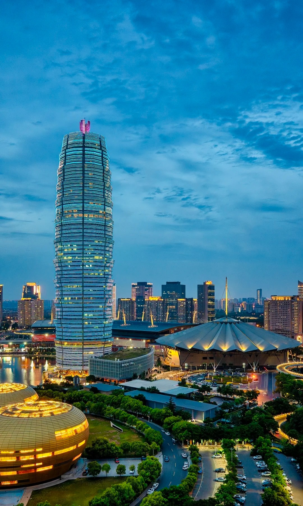
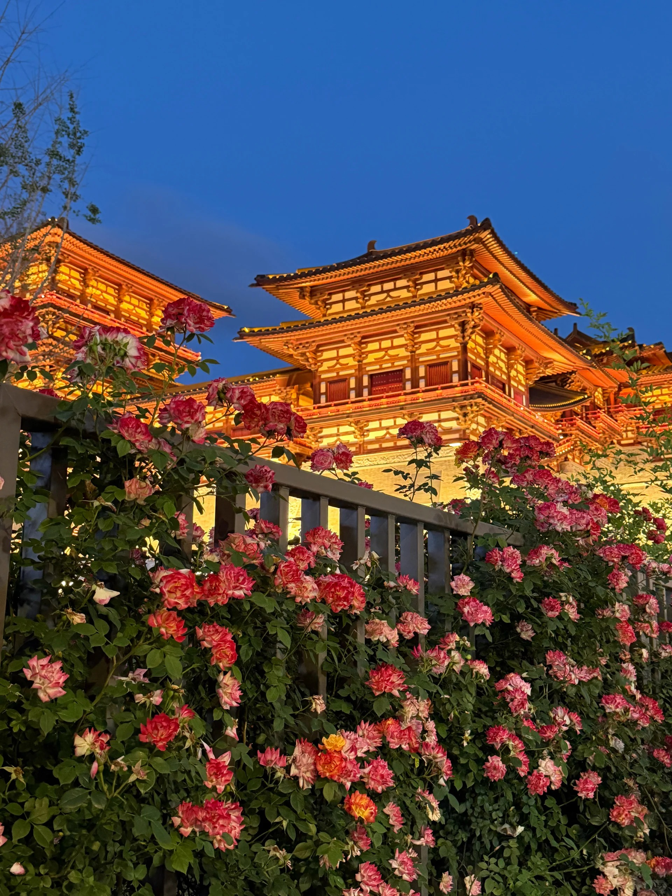

Zhengzhou
Zhengzhou is the capital of Henan Province and an important transportation center in China. It combines modern city life with a rich historical background.


My 7-Day Travel Plan Through History, Culture & Food
Henan is a province located in central China, known for its long history, rich culture, and traditional food. I'm planning a seven-day trip to Henan because I want to explore its historical attractions and try its delicious local cuisine. During my trip, I plan to visit Zhengzhou, Luoyang, and Kaifeng. I hope to discover famous historical sites, experience local traditions, and enjoy some of Henan's most popular dishes. This website introduces the places I want to visit, the food I would like to try, and my seven-day travel itinerary.
Video: Discover Henan
This video introduces Henan Province in English, showcasing its rich history, traditional culture, beautiful scenery, and tourist attractions.
Video source: YouTube
(Background music plays throughout the video.)
With open arms and a warm smile, Henan welcomes you. Henan is at the center of China. Henan is the cradle of Chinese civilization. Henan is the spiritual home of all descendants of the Yan and Yellow Emperors.
The Yellow River gave birth to the Chinese nation. This mighty river originates from the snow-covered mountains of Qinghai, flows through loess fields and shaped vast plains with the sediment it carried with its waters. The Yellow River irrigates the Central Plains and sustained the people along its banks. For five thousand years, the Chinese people prospered here. From the times of Yu the Great's legendary taming of the floodwaters to the fleeting glory of the Song Dynasty city of Kaifeng, more than 20 Chinese dynasties established their capitals here.
This is the place where over one hundred schools of thought contended. Confucianism, Buddhism and Taoism developed in harmony, and Chinese philosophies and convictions converged to progress through the ages. This is the motherland where the bloodline of the Yan and Yellow Emperors has been passed on, as countless families and clans established roots and thrived. The Chinese civilization took its first steps here and has prospered ever since.
Writing is one of the most important manifestations of civilization. The oracle bone inscriptions found in the Yin Dynasty Ruins in Anyang top the ten greatest archaeological discoveries of the 20th century. As some of the oldest characters in the world, their cultural significance is remarkable. Fortunately, we can still enjoy their everlasting charm in the Ruins of the Yin Dynasty. These oracle inscriptions possessed the basic elements of Chinese calligraphy, which had a tremendous influence on subsequent carving and calligraphy techniques. Stroke by stroke, Chinese characters constructed a civilized world. This is the place where the Chinese language set forth to spread Chinese civilization to all corners of the world.
Chinese art expresses the quintessential beauty of life itself. Unlike Western art, which originated from religion, Chinese art is a representation of Chinese lives. The beauty of life has been highly regarded by the Chinese people. From the daily lives of common folk to the fancies of literary men, from the mountains, forests and grass created by nature to the temples and pavilions which bear witness to history, the Chinese people poured out their sentiment of pursuing a good life into every part of their existence.
A lump of clay, baptized by essences of bygone days. A line of opera, articulated through singing, gesticulation, elocution and acrobatics. A piece of paper, created by way of skillful cutting and delineation. A bowl of noodles, cooked through skillful and meticulous dedication. The Chinese people fill their living moments with novelty and wisdom, and in Henan, art shines with the glory of humanity.
In the long history of Chinese civilization, we may feel that the unique Chinese characteristics are all around us and within us, which is to a large extent reflected in Kungfu. Kungfu, or martial arts, can only be mastered through hard work and practice. It contains rich yet profound Chinese philosophy, whether in curing diseases and improving health, or in subduing the enemy and preventing conflict. Kungfu can even have an effect on the daily lives of Kungfu fighters. All styles or schools of martial art originate from Shaolin Temple. Today, Shaolin Kungfu has become a window of Chinese culture to the world, which also turns Shaolin Temple into the most influential holy land.
Kungfu is a collection of wisdom. Kungfu is the honing of will. Kungfu is the heritage of skills. Kungfu is the essence of a rising culture.
If it can be said that the ancient and glorious civilization laid down the foundations for the spiritual homeland of the Chinese people, then the dramatic changes today have brought us the hopes for tomorrow.
Zhengzhou is the capital of Henan Province and an important transportation center in China. It combines modern city life with a rich historical background.

Luoyang is one of China's ancient capitals, famous for its history, cultural heritage, and traditional food. It is home to many beautiful historical attractions. I am especially excited to explore this ancient city.

Kaifeng is a historical city known for its connection to the Song Dynasty. It is famous for its traditional buildings, lively streets, and delicious local snacks. I look forward to experiencing the atmosphere of this ancient city.
After exploring the highlights of Zhengzhou, Luoyang and Kaifeng, take a look at the places I have chosen for my own seven-day journey through Henan.
View My Itinerary →